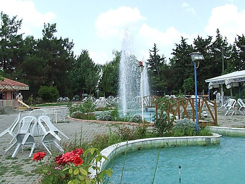

Kadirli

KADİRLİ TARİHİ, KÜLTÜREL VE EKONOMİK DURUMU
Tarihi; Romalılar döneminde FLAVİOPOLİS adı ile görkemli bir kent olan Kadirli, 1515 yılında Osmanlı padişahı Yavuz Sultan Selim tarafından Osmanlı topraklarına katılmıştır. Osmanlı döneminde Maraş beylerbeyliğine bağlı bir sancak (Kars-i Zülkadriye) olan Kadirli de, 1865 de ilçe,1872 yılında da belediye kurulmuştur. Şehre Osmanlı döneminde, “PAZARYERİ” ve “KARSPAZARI” gibi değişik adlar verilmiş olup İlçe 1928 yılında Kadirli adını almıştır. I.Dünya savaşı sonunda 14 mart 1919 yılında ermeni ve Fransızlar tarafından işgal edilmiş olan ilçemiz,7 Mart 1920 de düşman işgalinden kurtulmuştur. Kültürel Durum; Flaviopolis antik kenti üzerinde kurulu bulunan ilçede okuma-yazma oranı %98 dir. Merkezde Kültür ve Turizm Bakanlığına ait bir halk kütüphanesi, Sergi Salonu ve konferans salonu bulunmaktadır. Kadirli Belediyesine ait bir kültür merkezi ve bir sineması mevcut olup tiyatro yoktur. Kadirli Merkezde Kadirli Belediyesi Kent Müzesi, Kızyusuflu Köyü Sınırları içerisinde Karatepe-Aslantaş Açıkhava Müzesi, Harkaçtığı Köyünde Kadirli Eğitim Müzesi, Vayvaylı Köyünde Vayvaylı Köy Müzesi bulunmakta, Karatepe Kilim Kooperatifi’de ilçemiz sınırları içerisindedir. Ayrıca, Karatepe Aslantaş Milli Parkı Kızyusuflu sınırları içerisinde olup, merkezde Tarihi Alacami bulunmaktadır. Son yapılan kazılarda tarihi önemi çok büyük mozaikler ortaya çıkarılmış, kazı çalışmaları devam etmektedir. Ünlü Yazar Yaşar Kemal Dünyaca ünlü romanı İnce Memet’i Kadirli’de yazmıştır. İlçede 2 haftalık, 4 adet günlük gazete çıkmaktadır. İdari Durum; İlçe 1 belediye, 20 mahalle ile 60 köy ve bağlıları ile birlikte 174 üniteden meydana gelmiştir. Coğrafi yapısı; Kadirli Çukurova’nın kuzeydoğusunda ve orta Toroslar’ın güneyinde yer almaktadır. Deniz seviyesinden yüksekliği ortalama 95 metre ve yüzölçümü 1071 km2 dir. İlçe arazisinin üçte biri dağlık üçte ikisi ise ovalıktır. Ceyhan ırmağı ile onun kolları olan Savrun çayı ve Kesiş deresi ilçenin muhtelif yerlerinden geçmektedir. Kadirli’de suptropikal Akdeniz iklimi egemendir. Yazları sıcak ve kurak; kışları ılık ve yağışlı geçer. İlçede bitki örtüsü zengindir. İlçe yüzölçümünün %39 u ormandır.
Devami
Sosyal Yapı; İlçede sosyal yapıyı belirleyen temel unsur tarıma dayalı ekonomi ve akrabalığa dayalı geleneksel toplum anlayışıdır. Son zamanlarda ilçe bir yandan göç verirken diğer yandan da göç almaktadır. İş hayatı; başta tarımsal faaliyetlere, memurluk, esnaflık ve ticarete dayalıdır. İlçede sanayi pek gelişmemişken Organize sanayi bölgesinin kurulması ile bu alanda önemli gelişmeler kaydedilmiştir. ilçenin eğitim seviyesi oldukça yüksektir. İdari Durum; İlçe 1 belediye, 20 mahalle ile 60 köy ve bağlıları ile birlikte 174 üniteden meydana gelmiştir. Ekonomik Durum; Sıcak iklim avantajlarına sahip İlçemizde, sulama imkanının geliştirilmesiyle yıl içinde 3 ayrı ürün yetiştirilebilmektedir. Üretilen ürün yelpazesi çok geniştir. En fazla mısır, turp, buğday yetiştirilir.
Sayfa Geri Dön